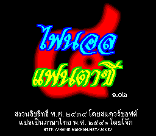
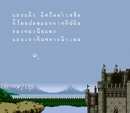
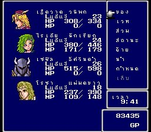
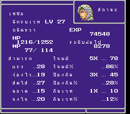
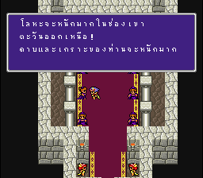
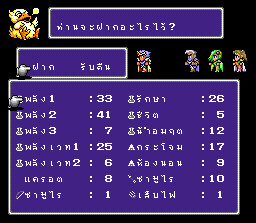
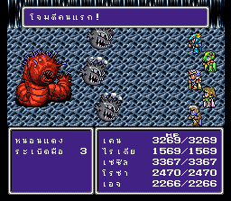
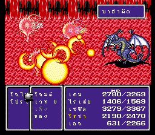

|
Final Fantasy 4 Thai
http://home.nakhon.net/joke/ff4t/
ชื่อว่า Final Fantasy 4 Thai แต่ไม่ได้หมายความว่า Square จะแปลเองนะ
แต่เป็น version ที่คนไทยแปลเอง แปลเฉพาะตัวภาษา เนื้อเรื่อง
ซึ่งแปลมาจาก Final Fantasy II (ซึ่งเป็น Final Fantasy 4 ภาษา Eng)
ผู้แปลก็คือ "พี่โจ๊ก" เริ่มแปลตั้งแต่ปี พ.ศ.2540 กว่าจะเสร็จก็
ปีกว่าๆ
เจออุปสรรคปัญหามากมายนานับประการ (ฮา)
ตั้งแต่ตัวอักษรภาษาไทยรวมทั้งสระและวรรณยุกต์ ที่มีเยอะมาก
แต่ตัวอักษรภาษาอังกฤษมีเพียง 26 ตัวเท่านั้น
จึงเป็นการยากที่จะนำตัวอักษรทั้งหมดของภาษาไทย มาใส่ไว้ในพื้นที่ที่จำกัด
อีกทั้งภาษาไทยยังมีสระและวรรณยุกต์บน-ล่าง อีกต่างหาก
ซึ่งภาษาอังกฤษไม่มี
ดังนั้น พี่โจ๊กจึงจำเป็นต้องลดทอนตัวอักษรภาษาไทย ให้เหลือเพียงไม่กี่ตัว
โดยทำการเลือกเฉพาะตัวอักษรที่ใช้บ่อยๆ
ส่วนตัวอักษรที่ใช้ไม่บ่อย จะตัดทิ้งไปเลย เช่น "ฒ", "ฑ",
"ฬ" เป็นต้น
และสำหรับปัญหาเรื่องสระและวรรณยุกต์บนล่าง
วิธีแก้ไขก็คือ ต้องทำตัวอักษรใหม่ขึ้นมาอีก 1 ตัว เฉพาะคำไป
สมมุติ คำว่า "ที่" ก็คือ 1 ตัวอักษร ไม่ใช่ "ท.ทหาร"
บวก "สระอี" บวก "ไม้เอก"
ทำให้หน่วยความจำที่จะเก็บตัวอักษรที่มีน้อยอยู่แล้ว
กลับต้องน้อยลงไปอีก เพราะจำเป็นต้องเก็บ "คำ" ที่ผสมเสร็จเรียบร้อยแล้วด้วย
ปัญหาอีกอย่างหนึ่งก็คือ ในการแปลข้อความภาษาอังกฤษนั้น
บางข้อความเขียนเป็นภาษาอังกฤษด้วยตัวอักษรเพียงไม่กี่ตัว
แต่เมื่อแปลเป็นภาษาไทยแล้ว กลับต้องใช้พื้นที่มากกว่า
เช่น คำว่า "can" ซึ่งแปลว่า "สามารถ" ภาษาอังกฤษใช้เพียง
3 ตัวอักษร
แต่ภาษาไทยใช้ถึง 6 ตัวอักษร
จึงเป็นข้อจำกัดที่ทำให้การแปลมีข้อความที่ผิดเพี้ยนไปมาก
แต่ถ้าหากอ่านดูแล้ว เนื้อหาทั้งหมด ก็ถูกต้อง ตรงตามภาษาอังกฤษ
เพียงแต่ใช้คำพูดที่ไม่สละสลวยเท่านั้น
อ้อครับอ้อ
ใครเล่นแล้วเจอ bug ตรงไหนที่ลืมแปล เมล์มาบอกด้วยนะครับ
ส่วนใครที่เล่นไปถึงกลางๆ เกมแล้วมันไม่แปลต่อ
แสดงว่าคุณได้ d/l ตัวเกมฉบับทดสอบไป ซึ่งไม่ใช่ตัวใหม่ล่าสุด
ตัวใหม่ล่าสุดตัวเต็มต้อง version ๑.๐๒ และมีเลข 4 ไทยตัวใหญ่เป็น Title
นะครับ
๔๔๔๔๔๔๔๔๔๔๔๔๔๔๔๔๔๔๔๔๔๔๔๔๔๔๔๔๔๔๔๔๔๔
หลังจากที่มีเกม Final Fantasy 4 Thai ออกมาให้คนไทยได้เล่นกัน
ได้มีคนไทยอีกหลายๆ กลุ่มที่พยายามแปลเกมต่างๆ เป็นภาษาไทยด้วย
บ้างก็ประสบความสำเร็จ บ้างก็เลิกล้มกลางคัน เนื่องจากปัญหาข้างต้น
ปัจจุบัน โปรแกรมที่ช่วยแปลเกม หรือแก้โค้ดเกมมีออกมามากมาย
และสามารถเพิ่มเติมแต่งตัวเกมได้หลายอย่าง
รวมทั้งเพิ่มหน่วยความจำของตัวเกมได้อีกด้วย
ทำให้สามารถลดปัญหาไปได้หลายประการ
ตัวอย่างเกม Final Fantasy 4 Thai
Title

Intro

Menu

Status

Talk

Fat Chocobo

Battle

Bahamut

|